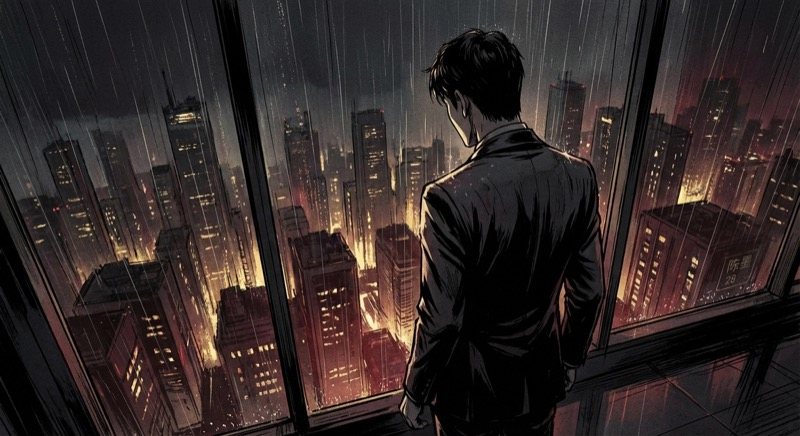
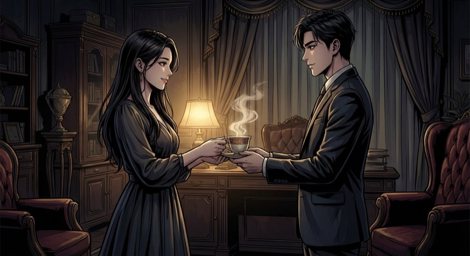
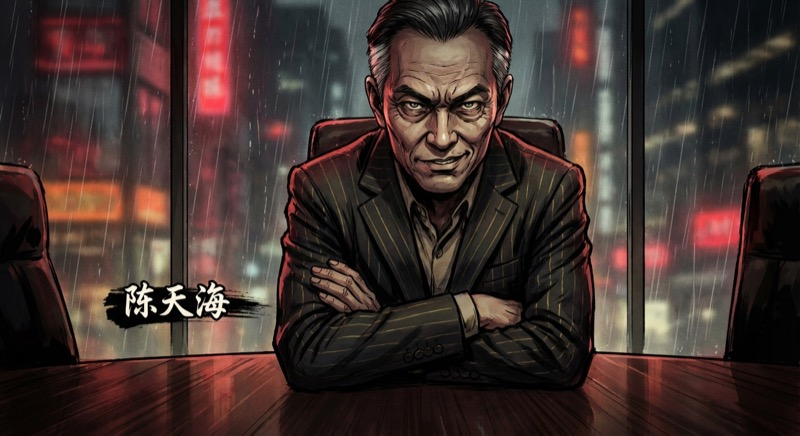
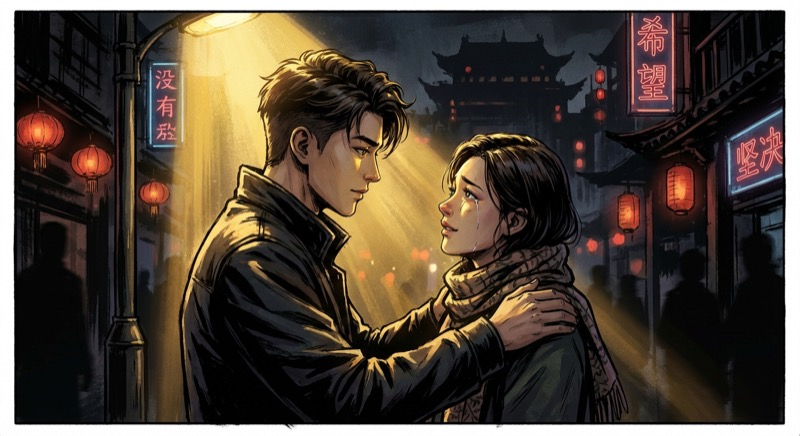
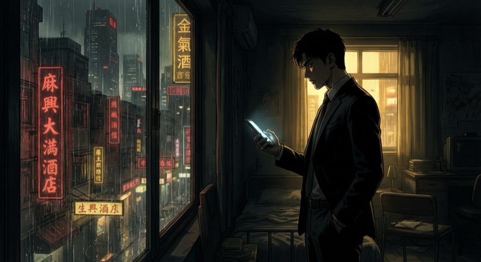
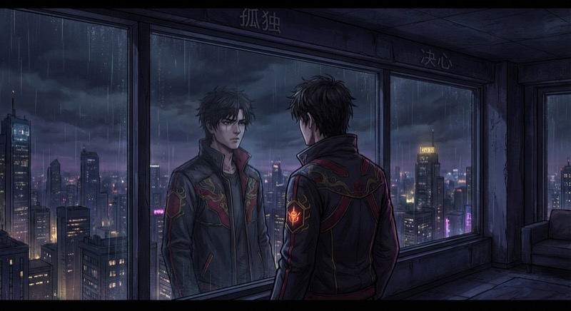
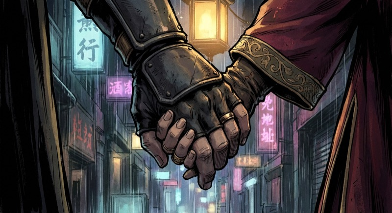
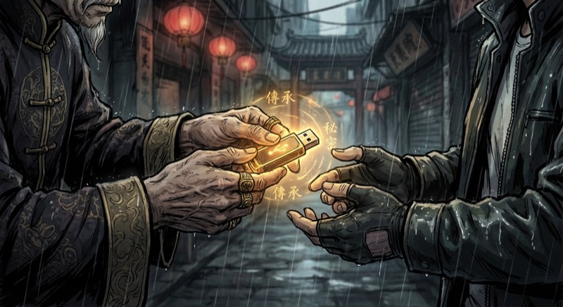

身份曝光后的第三天。九州集团总部。

这座城市……
终于不用再躲了。
陈墨站在九州大厦顶层，俯瞰整座城市。三年的隐忍，换来此刻的一览无余。

加班到现在？
喝杯咖啡吧。
林雨晴轻轻推门进来。咖啡的香气，让紧绷的神经稍稍放松。
手机突然响起。屏幕上两个字——"二叔"。陈墨的眼神瞬间变了。

陈墨啊，
三年没见，
听说你回来了？
陈天海。九州集团二号人物。陈墨父亲的亲弟弟。
在陈墨"消失"的三年里，他一直把持着九州的实权。
"你一个当了三年赘婿的人，凭什么管理九州？！"
三个字。轻描淡写。却让整个会议室的温度骤降十度。
· · ·
当晚。某私密会所。
次日清晨，一条新闻炸开了锅——
"林氏集团涉嫌财务造假，证监会已介入调查。"
林雨晴看到新闻的那一刻，整个人都僵住了。手机上，林氏股价已经跌停。

有我在。
不会让你一个人扛。
陈墨轻轻握住她的肩膀。眼神里没有慌乱，只有坚定。
深夜，陈墨在数据海洋里抽丝剥茧。一条隐蔽的资金链浮出水面——
所有线索，都指向同一个人。

老赵，帮我查一个人。
查到底。

二叔……你不该动雨晴。
城市的灯火万家，映在玻璃上，也映出他眼底翻涌的杀意。
· · ·
三天后。九州集团谈判室。
陈天海派出了他最得力的代理人——号称"A市谈判之神"的周锐。
两人的目光在空气中交锋。无声的较量，比任何语言都猛烈。
陈墨不动声色地推出一份文件。
"陈天海，挪用九州公款3.2亿，转入境外账户。"
对面的周锐，脸色瞬间煞白。
陈墨选择了最高调的方式——召开新闻发布会。
在所有镜头面前，让真相大白于天下。
全场哗然。几百名记者的闪光灯同时亮起，仿佛白昼。
陈天海在办公室里看到直播，暴怒摔碎了水晶杯。而股市那边——林氏股价强势反弹，连拉三个涨停。
林雨晴看着电视里的陈墨，泪水夺眶而出。不是委屈，是骄傲。
· · ·
当晚。回家的路上。
五个黑衣人从暗处冲出！
陈墨嘴角渗血，西装撕裂。但五个黑衣人，全部倒下了。
三年赘婿生涯里，他从未放弃过训练。
医院里，林雨晴守了他一整夜。而城市另一头，陈天海正在部署更狠毒的一步。
九州集团特别董事会——
议题只有一个：罢免陈墨。
一只只手举起来。陈天海用三年时间收买的人脉，终于派上了用场。
12票赞成，3票反对——罢免通过。
陈墨起身，理了理衣领，一步步走出会议室。没有回头。
有些路，必须走到最黑才能看见光。

我们一起扛。
不管发生什么。
两只手紧紧握在一起。结婚戒指在灯光下闪烁。这一刻，比任何商业帝国都重要。
· · ·
陈墨找到了一个人——九州集团的创始人，他的爷爷，陈老爷子。
这位隐退十年的商界传奇，一直在暗中注视着一切。

这是你父亲留给你的。
他说……等你准备好了再看。
一个小小的U盘。却重如泰山。
U盘里的真相，比陈墨想象的更触目惊心——
十年前那场"意外"车祸，根本不是意外。陈天海一手策划，害死了陈墨的父亲。
七天后。九州集团年度股东大会。所有股东悉数到场。
这一次，陈墨要在所有人面前，讨回属于自己的一切。
大屏幕上，十年前的监控录像、银行转账记录、通话录音……一条条铁证，像一把把刀子。
"不……不可能……这些怎么可能还在……"
陈天海瘫在椅子上，面如死灰。三年布局，一朝崩塌。
大门推开。两名警察走了进来。
"陈天海先生，请跟我们走一趟。"
日出。九州大厦楼顶。
陈墨张开双臂，让金色的阳光洒满全身。
爸，儿子做到了。
手机亮了。一条匿名短信——
"游戏，才刚刚开始。"